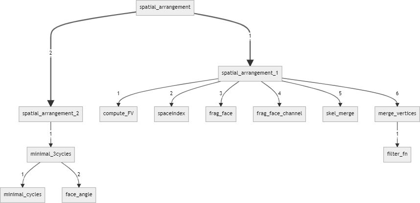

Studio Definitivo
Giunti nella fase finale del progetto è stata ottenuta una nuova versione del codice nel quale è stato ottimizzato e parallelizzato ove possibile anche servendoci delle macro offerte da Julia (ad es. Thread.@spawn, @sync, @async). Inoltre sono state eliminate varie ridondanze del codice per ottenere una miglior eseguibilità e leggibilità, talvolta anche intere sotto funzioni.
Problemi noti
Abbiamo riscontrato qualche problema nel corso del progetto e non per tutti è stato possibile arrivare ad una soluzione efficiente, infatti si noti come la parallelizzazione multi-channel non viene utilizzata. Come per la versione originale di LAR si pone il problema quando la funzione frag face channel viene chiamata senza istanziare nuovamente i parametri iniziali sui diversi canali. Infatti si genera un canale vuoto dove si rimarrà in attesa all’infinito e questo porterà l’intera funzione in un loop, appunto, senza fine. Inoltre abbiamo tentato di far girare il codice sul server DGX-1 utilizzando la libreria CUDA.jl per ottenere una parallelizzazione ad alte prestazioni, purtroppo non è stato possibile eseguire le funzioni in quanto è necessario che queste ritornino un valore nullo, nel nostro caso invece si ha sempre un valore diverso da nullo. Una possibile soluzione è quella di caricare tutto sulla memoria RAM delle GPU ma non è stato possibile in quanto viene utilizzato il tipo Float 64 per rappresentare la matrice dei vertici V.
Test
Per quanto riguarda la parte di test sono stati verificati quelli offerti da LAR ed inoltre è stata verificata la stabilità dei vari tipi di variabile utilizzando la macro @inferred che si occupa di verificare se il tipo assegnato rispetti il tipo atteso da quella specifica variabile su cui viene applicata. E’ stata inoltre implementata qualche funzione di test per controllare il corretto funzionamento del codice ed è stato effettuato un ulteriore controllo per accettarsi che i risultati ottenuti siano conformi con quelli della versione originale di LAR.
Sviluppi futuri
Il progetto offre ancora un possibile refactoring futuro, infatti come visto in precedenza potrebbe essere utile osservare i risultati che dovrebbe fornirci la parallelizzazione effettuata con la libreria CUDA.jl o magari migliorare funzioni per ottenere una minore complessità computazionale.
